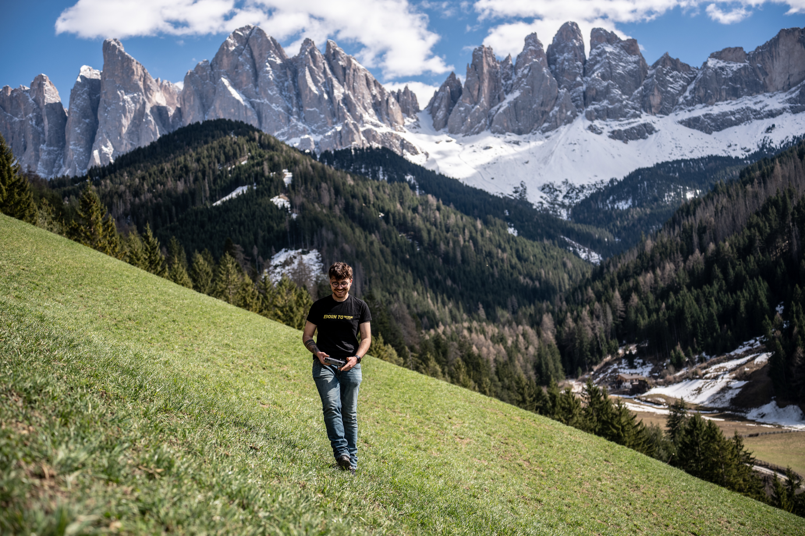

Salta →
01 / 07
Fotografo · Videomaker · Drone Operator · Color Grading · Motion Graphics · Fotografo · Videomaker · Drone Operator · Color Grading · Motion Graphics · Fotografo · Videomaker · Drone Operator · Color Grading · Motion Graphics ·
↓
ZR
Per riprese cinematografiche
↓
Per riprese aeree
Dal drone al set
↓
MacBook Pro
Per editare tutto
↓
Color correction
Montaggio video
Animazioni e titoli
La suite completa
0
Progetti realizzati
0
Matrimoni 2025
0
Anni di esperienza
Triveneto
ENAC A1/A3
Dal 2020
Pronto a scoprire il lavoro?
Entra nel sito
→
alessiolazzarini.com